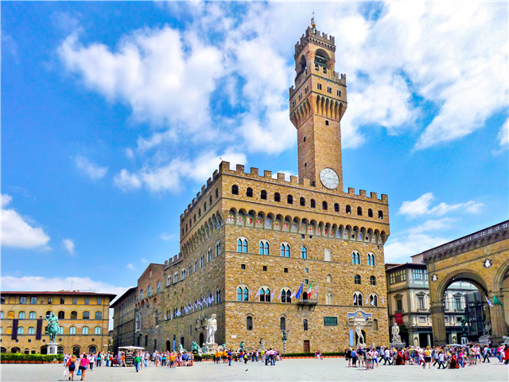
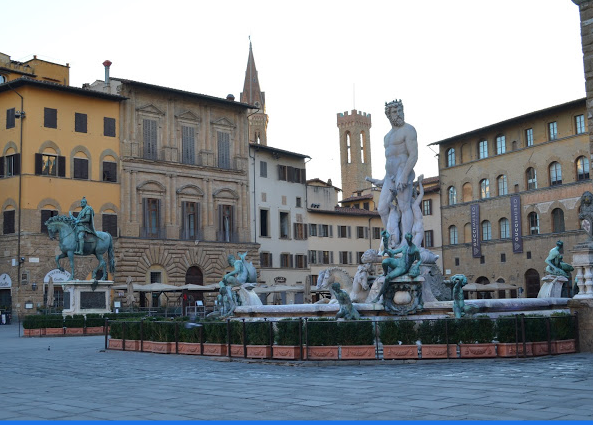
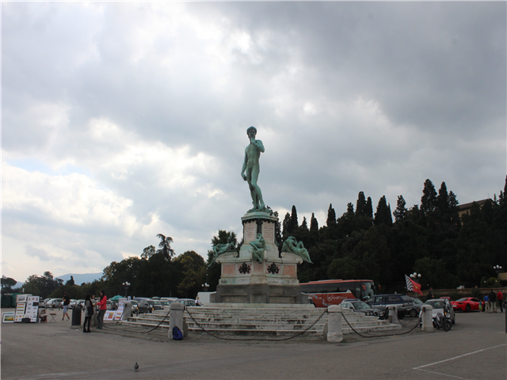
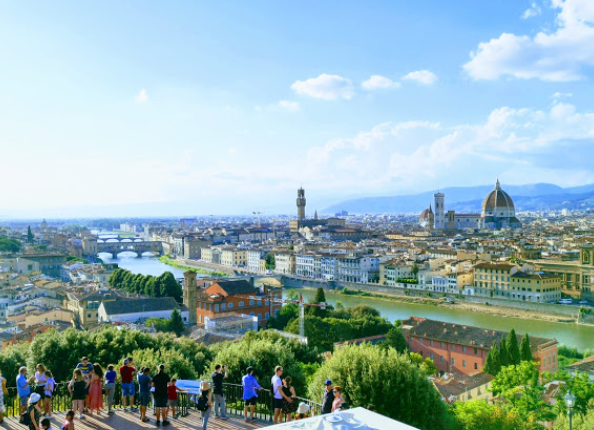

피렌체는 기원전 80년 루키우스 코르넬리우스 술라가 아르노 강가에 자신의 병사들을 위한 정착지를 세울 때
"두 강 사이에 있는 마을"이란 뜻으로 "플루엔티아"라는 도시를 세웠는데 이 명칭이 후에 "플로렌티아"로 바뀌었다.
그러나 술라의 퇴역병들은 곧 도시를 방기하여 이때의 식민지 건설은 실패했고,
기원전 59년 율리우스 카이사르가 새로 퇴역병을 이주시켜 건설한 것이 현재 피렌체의 시작이다.
학문과 예술
르네상스 시대에 여러 유력가문이 정쟁을 벌이다 1434년부터 메디치 가문이 완전히 정계를 장악하기 시작하였다.
15세기 메디치 가문의 지배 시기는 사실상 피렌체의 최 전성기로,
메디치 가의 강력한 후원 덕에 무수한 학자와 예술인의 작품들이 만들어졌고,
메디치 가가 자랑하는 정예군 검은 군단 등의 강력한 군사력 또한 위용을 뽐냈다.
대표적인 피렌체 예술가의 명단
• 레오나르도 다 빈치
• 미켈란젤로
• 라파엘로
• 보티첼리
• 도나텔로
패션
북부 이탈리아답게 많은 럭셔리 브랜드 하우스의 본사가 자리하고 있다.
구찌, 페라가모, 토즈등의 브랜드가 이 도시에서 시작한 브랜드이다.
르네상스 시대의 건축물이 잘 보존되어 도시 전체가 명품관 느낌이 날 정도이다.
하지만 관광객이 너무 많아서 신주쿠보다 인파가 많다고 느껴질 정도다.
1. 시뇨리아 광장
일반적인 유럽의 다른 광장보다도 예술적 성향이 짙은 시뇨리아 광장은 베키오 궁전과 우피치 미술관에 인접하고 있으며
'코지모1세의 청동 기마상', '다비드상'의 복제품, '넵튠의 분수' 등의 수많은 조각들이 전시되어 있다.
무엇보다도 시뇨리아 광장에서 눈에 띄는 것은 미켈란젤로의 3대 걸작 중 하나로 통하는 다비드상.
진품은 1807년부터 인근 피렌체 아카데미아 미술관에 있다.
하지만 원래 이 자리에 진품이 있었던 것이 사실이다. 다만 오래전 강풍에 날아든 판자에 다비드의 왼손이 부서지고,
한 정신병자가 왼쪽 엄지발가락을 망치로 부숴버리는 사건이 발생한 후 이 자리에 모조품을 세워놓은 것이다.
우스운 것은 모조품이 세워진 이후 모조품에 대해 사람이든 자연이든 그 어떤 위해도 가하지 않았다는 것.
조각상들이 다들 무기를 들고 강압적인 모습인데 이것은 메디치가의 정치색이 담긴 작품들이라고 한다.
피렌체의 명소를 한번에 둘러볼 수 있는 중심지이다.


2. 미켈란젤로 광장
미켈란젤로를 기리기 위해 만들었으며, 다른 작품들 없이 하나의 다비드 상이 놓여있다.
아름다운 피렌체 시내를 한눈에 내다볼 수 있는 곳이기도 하다.

